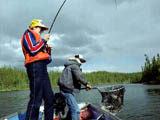

|
|
|
|
|
|
Quiz Format |
|
|
|
|
|
 Directions: Read the statement and choose the most appropriate response. You may click the helpful hints button at any time. Good luck! 1. Saskatchewan sport fishing regulations are ***.
a. set as guidelines for anglers only
2. Transporting fish you have caught is regulated by Saskatchewan Fisheries. The species of fish must be readily identifiable. This may be achieved by ***.
a. filleting the fish, then labelling the package with the species name
3. There is a limit to the number of lines allowed in the water while sport fishing. No more than two lines are allowed while ***.
a. open season fishing
4. Improvement projects such as mini-hatcheries, educational activities for youth, assessment of appropriate waterbodies, habitat improvement are all example of projects which may have received part of their funding from *** .
a. the sale of sport fishing gear
5. A fishing licence to sport fish is not required ***.
a. senior citizens
6. The best time to catch a predator fish, like a pike or walleye, would be ***.
a. at dusk, when schools of smaller fish start to break apart
7. The number of fish that live in Saskatchewan waters is decreasing due to a number of factors. These factors include destruction of fish habitat, poor land practises, overfishing and ***.
a. an increase in predator species such as bears
8. Brood stock used in fish culture stations are ***.
a. fish from which eggs and milt are obtained
9. Stock from the Fort Qu'Appelle Fish Culture Station are distributed to lakes and waterways throughout Saskatchewan. The amount of fish delivered to a waterway depends upon the ***.
a. distance that the stock fish must travel
10. Saskatchewan Environment and Resource Management, Fisheries Branch, conducts a survey of sport fishing in Saskatchewan *** in order to provide a better understanding of fisheries in the province.
a. every five years
|
|
|
|